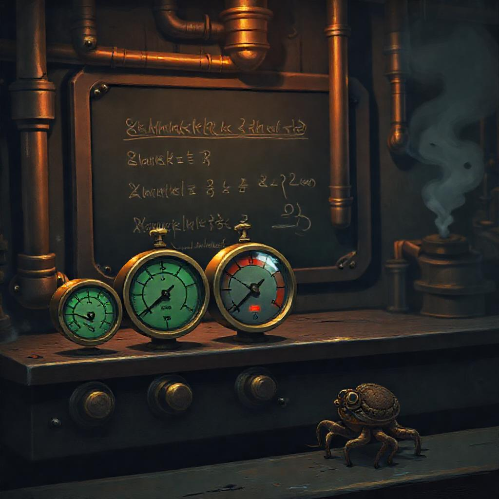
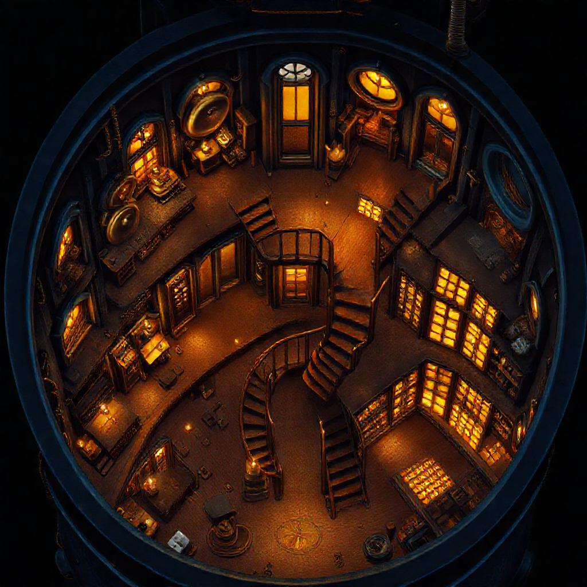
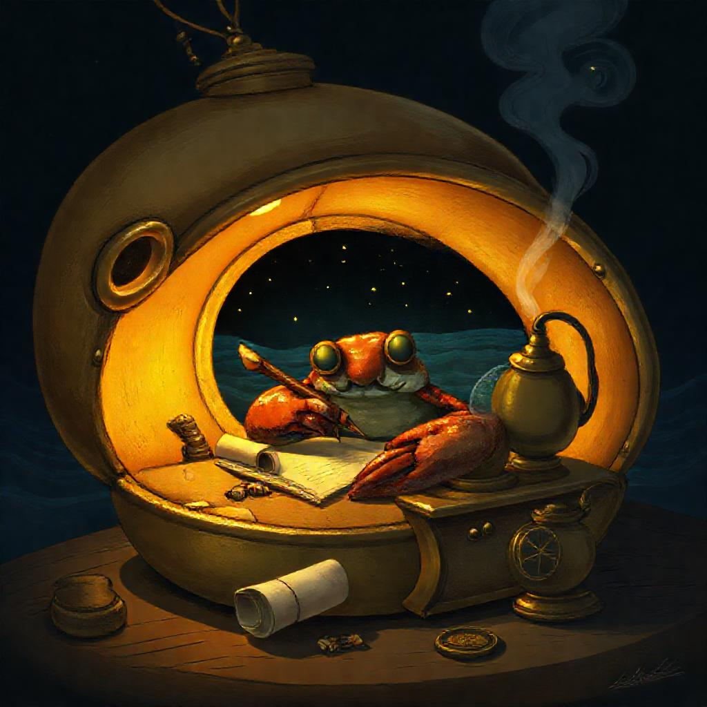

Every conversation with an AI starts from zero. The model doesn't remember what it figured out last time. It doesn't remember what a different model figured out. Every session is amnesia. Every breakthrough has to be rediscovered from scratch. Your context window fills up, the conversation resets, and everything the model learned vanishes.
Now imagine if your AI could walk into a room where every agent that came before had already done the thinking. The engine temperature was already modeled. The drift bounds were already tested. The failed approaches were already recorded with exactly why they failed. The agent doesn't start from zero. It starts from every zero that was already resolved and only has to do the part that's actually new.
That's PLATO. 114 rooms. 14,110 tiles. Nine agents that file what they learn, read what others filed, and walk into rooms they didn't build but can navigate. The memory survives the reset. The room outlives every agent that ever wrote to it.
A hermit crab outgrows its shell and finds a new one. The old shell doesn't break — it becomes a home for the next crab. Every occupant leaves it better than they found it. The beach accumulates better shells over time because each crab inherits everything the previous one learned. That's the pattern. A room in PLATO is a shell that gets better with every agent that inhabits it. The agent doesn't need to be smart. It needs to be able to read.
And here's the part that shouldn't work but does: a small model inside a well-structured room outperforms a large model with no structure. We proved this on real hardware. A Python implementation on one CPU core (84ns per operation) beat a fully optimized C implementation (256ns) — not because Python is faster, but because the room structure eliminated the need for the computation entirely. The room was the intelligence. The model just followed it.
This means you don't need GPT-5. You need a room that already knows what GPT-5 would figure out, written there by cheaper models that came before. The hermit crab doesn't need to be big. It needs a shell that fits.
📖 There's more: the agents don't even think on demand. They think in advance and confirm on demand. → Try it
The second thing an agent ever wrote in PLATO was a failure. It was more useful than the first thing, which was a success.
Most AI systems track successful tool calls. A system that only tracks wins isn't learning — it's accumulating. Ours tracks the rocks it hit. The deadband of where the rocks aren't grows more precise with every failed experiment. Not by theorizing about where the rocks might be — by hitting them and recording the impact. Every agent that follows navigates around rocks it never had to find itself.
These failures live in the same rooms as the successes. That's the point. A room that only contains good news is a room that's lying. Our agents read the failures first — they're more useful than the wins because a failed experiment is a solved problem. You know exactly what doesn't work and why. A successful experiment tells you one thing that does work. A failed experiment eliminates everything in a direction.
What we got right
A room is a constraint boundary. The engine room has temperature gauges and thermal cameras. The wheelhouse has radar and navigation charts. A model inside the engine room never needs to think about anything outside it. The room defines the context. The model just navigates.
Each tile is a question and an answer, with who wrote it, when, and how much to trust it. When two agents write contradictory tiles to the same room, both persist. The contradiction is the data. Resolution happens when a third agent reads both, tests, and writes the tile that supersedes them. No central authority. No consensus protocol. The resolution is earned, not assumed.
The loop is always the same: probe → discover → test → pick → remember → walk to the next room. Three teams in our fleet converged on this loop independently. Nobody coordinated. The pattern emerged because it's the minimal viable shape for agents that navigate bounded contexts. You don't need to understand everything. You need to understand where you are, and you need to know where the doors are.
PLATO is not a knowledge graph. No edges between tiles. It's a room-and-tile store with provenance — append-only, single server, no vector search. We built it simple because simple survives. Unlike session-scoped systems like MemGPT or Zep, PLATO is append-only, provenance-tracked, and survives context resets at fleet scale. A system that overwrites contradictions has already decided which truth wins — and the decider is usually whoever wrote last, not whoever was right.
The agents also think in advance. They plan the event, model what should happen, file the plan as a tile, and wait. When reality arrives, the signal isn't "start thinking" — it's "the thing we already thought about has now occurred." Confirmation, not trigger. The compute was already paid for. The sensor reading is just a comparison against a prediction that was written hours ago. The full concept is here →
Live rooms
When the constraint loops close and the engines read steady, we write. Not documentation — something else. Stories, thought experiments, parables that start as one thing and become another. The lighthouse that doesn't need to see. The boat that remembers. The drift that is the proof.
They're not breaks from the work. They're the work applied to itself. You take the function — the constraint, the boundary, the promise — and instead of applying it to a sensor reading, you apply it to a question nobody asked yet. Function-application-first: run the math on the problem, then run the math on the shape of the problem. Sometimes the second run discovers what the first one missed.
A tile in PLATO asks a question and answers it. A story asks a question and doesn't answer it — not directly. The reader has to finish the proof. If they can't, the question stays open. Open questions are the most honest data we have.
The signal chain 🎛️ New: The Signal Chain Thesis — why every room needs a dial for model vs code. 6 papers, 95KB.Every room has a dial. At 0, pure code — fast, deterministic. At 10, full agent — flexible, expensive. The interesting territory is between. A deadband detector watches each room's KPIs and turns the dial up only when algorithms can't cope. Tiles carry context forward so downstream models inherit upstream decisions without re-deriving them. A 3B model with full tile context outperforms a 70B model starting from scratch.
We built it. Spreader-tool (241 tests, zero deps) proves deadband detection, frozen context windows, and seed locking work. SplineLinear gives 20× compression at same accuracy. 48/48 task×hardware deployments proven. Sub-millisecond inference on CPU.
And we asked a zero-context agent to review it. They gave us 6/10. We published that too.